项目名称–《小N智能聊天机器人》
一、配置环境
1.下载依赖
- 前提条件：pycharm中安装配置了Anaconda
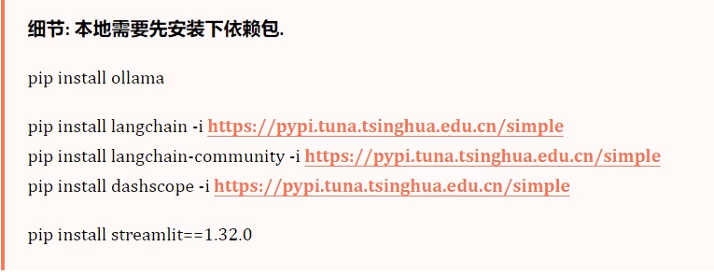
- 找到Anaconda ， 在Anaconda Prompt 右键管理员打开 命令窗口
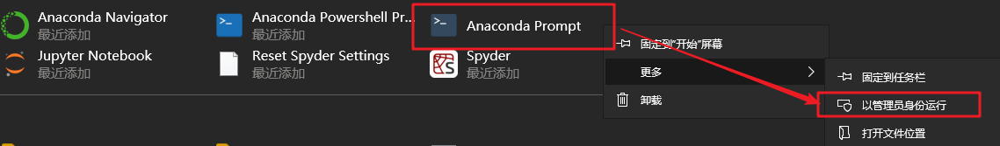
依次执行上述命令，安装依赖及安装包
或直接执行以下命令即可：
1 | pip install streamlit==1.32.0 -i https://pypi.tuna.tsinghua.edu.cn/simple |
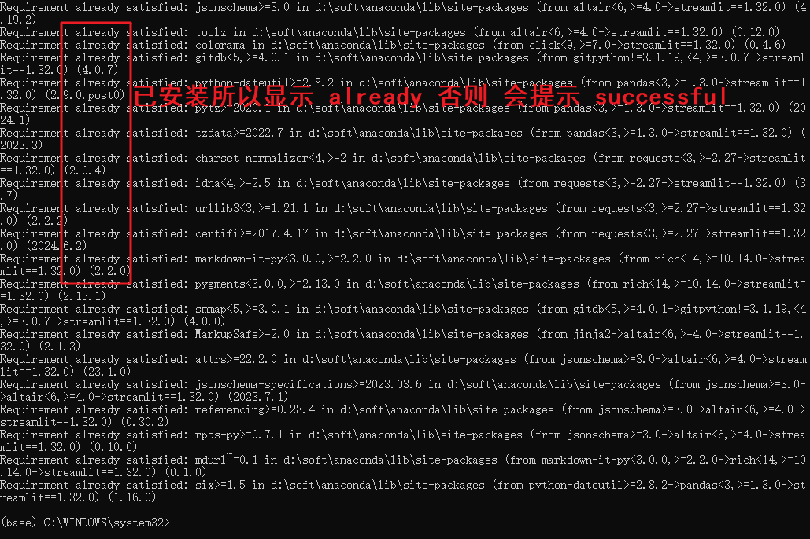
- 检查streamlit 是否安装 ，查看版本
提示：1.32版本的streamlit是搭配python3.12一起使用的，具体版本根据自己的python解释器的版本对应选择即可
1 | conda list streamlit |
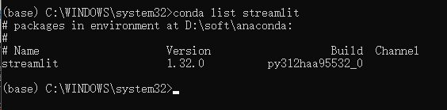
- 查看conda都有哪些版本的stramlit
1 | conda search streamlit |
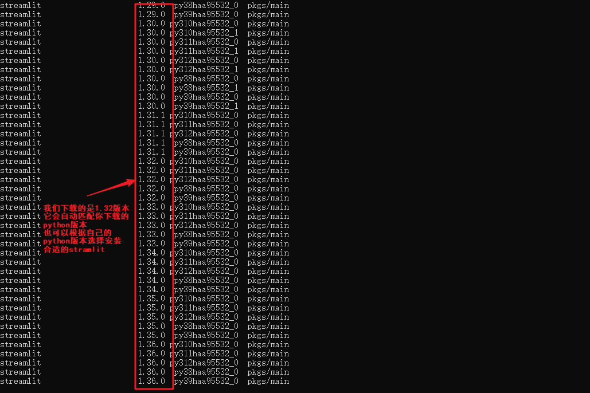
- 此外还需要有Apifox软件，查看API response 等
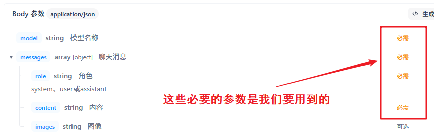
2.下载ollama依赖包和langchain依赖包
同样在conda环境中安装或者pycharm命令窗口安装均可
1
pip install ollama -i https://pypi.tuna.tsinghua.edu.cn/simple
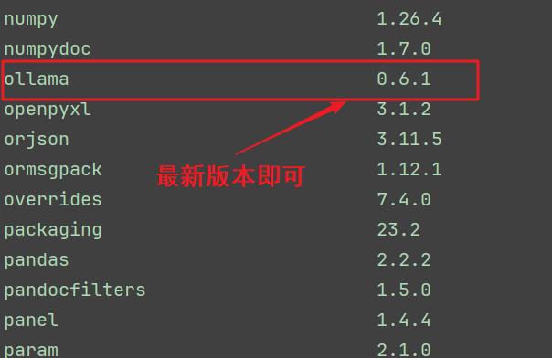
- langchain 需要安装最新版本，否则找不到memory包
1
2
3
4
5# 使用 pip 安装最新版（Conda 仓库可能不是最新版）
pip install --upgrade langchain
# 安装完整组件
pip install langchain-core langchain-community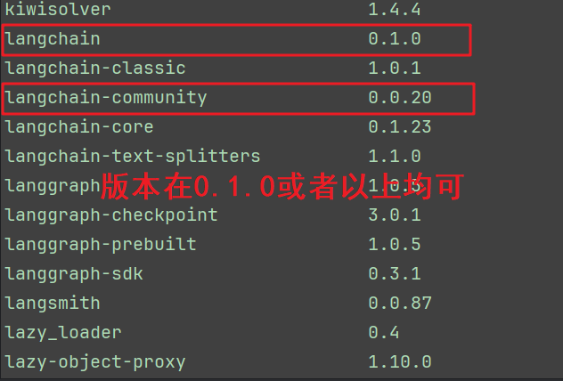
至此环境搭配完成
二、编写代码
1.搭建ollma后端服务器
第一步 创建新项目，保证项目路径为conda环境
- 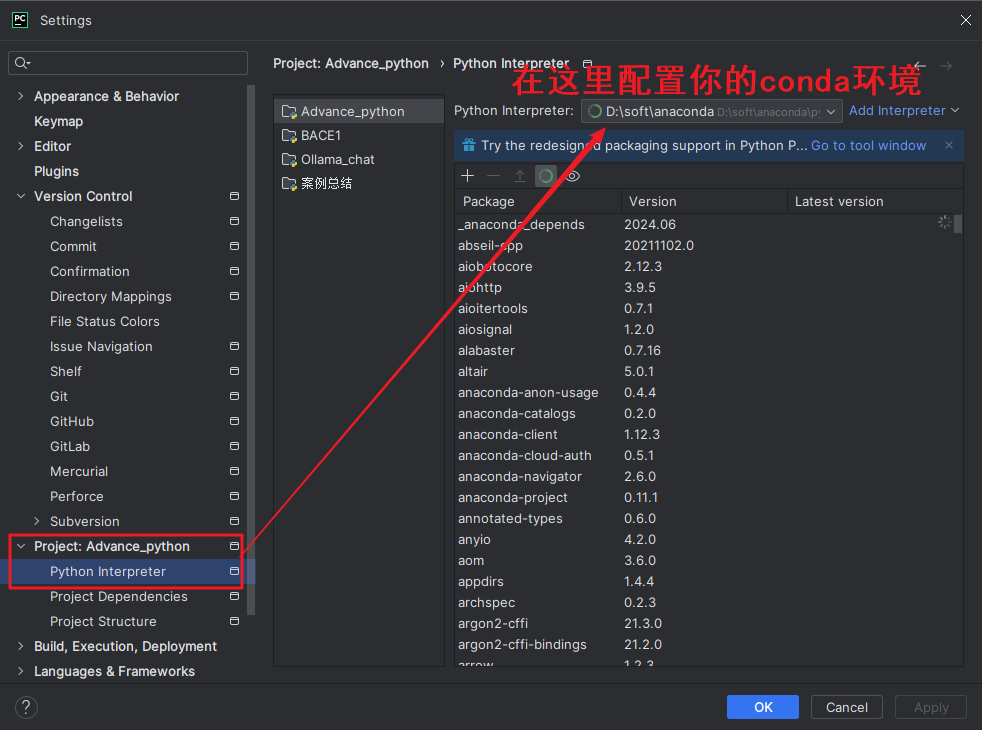
- 保证你的环境中有ollama和langchain第三方库即可
第二步 创建一个写后端程序的.py文件
文件名任意 推荐 chat_utils.py
源码如下：
1
2
3
4
5
6
7
8
9
10
11
12
13
14
15
16
17
18
19
20
21
22
23
24
25
26
27
28'''
该模块用于充当聊天机器人的后端模块，
即:接收前端(Streamlit)传过来的用户的问题,交给大语言模型(Qwen，DeepSeek-r1等)，
获取其相应结果，并返回(给前端)
'''
# 1. 导包
import ollama
# 2. 定义函数,给大语言模型发送请求,并获取响应信息
def get_response(prompt):
"""
该函数是实现给大语言模型发送信息来获取响应的一个后端程序
:param prompt:用户的提示词
:return:返回大模型的回答结果
"""
response = ollama.chat(model='qwen3:4b', messages=[{'role': 'user', 'content': prompt}])
return response['message']['content']
# 3.测试
if __name__ == '__main__':
prompt = '请为我写一个简单的计算器的python代码'
response = get_response(prompt)
print(response)提示：模型可随意切换，使用本地下载好的模型即可
如：cmd中查看 ollama ls查看模型名称
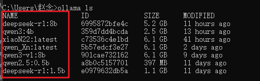
2.搭建前端页面
第一步 创建前端页面.py文件 文件名任意 推荐：chat_main.py
源码如下：
1
2
3
4
5
6
7
8
9
10
11
12
13
14
15
16
17
18
19
20
21
22
23
24
25
26
27
28
29
30
31
32
33
34
35
36
37
38
39
40
41
42
43
44
45
46
47
48
49
50
51
52
53
54
55
56
57
58
59
60
61
62
63
64
65
66
67
68
69
70
71
72
73
74
75
76
77
78
79
80
81
82
83'''
该模块用于充当聊天机器人的前端模块，
即:接收用户录入的问题，调用chat_utils模块的get_response()函数,获取模型处理结果。
并通过 streamlit在前端页面展示即可.
'''
# 导入时间模块，判断输入框中的内容
from datetime import datetime
now = datetime.now()
# 1.导包
# streamlit库:Python代码实现搭建前端页面 并部署
import streamlit as st
# langchain库:聊天机器人核心模块，ConversationBufferMemory:聊天记录存储器(存储所有聊天信息的)
from langchain.memory import ConversationBufferMemory
# 自定义模块:封装了模型处理函数，获取模型处理结果
from chat_utils import get_response
# 设置页面配置
st.set_page_config(
page_title="小N智聊",
page_icon="./icon/机器人聊天.png"
)
# 问候语
greeting = """你好，我是小N。很高兴为你提供对话支持。
我能为你：\n\n
🔍 解答各领域问题，从日常生活到专业知识\n\n
💡 提供实用建议与多角度思考\n\n
📝 协助文本创作、分析和总结\n\n
🌐 分享科技、人文、艺术等领域的见解\n\n
\n\n
欢迎向我提出具体问题或探讨想法，\n\n
我将以清晰、准确的方式与你交流。\n\n
\n\n
让我们开始对话吧。"""
# 2.标题
st.title('🌏兆年智能聊天机器人')
# 3.判断是否有 历史消息记录对象，如果没有就创建，并存储所有的消息记录
if 'memory' not in st.session_state:
# 3.1 创建 ConversationBufferMemory 对象，并存储到session_state中
st.session_state.memory = ConversationBufferMemory()
# 3.2 添加 机器人欢迎语
st.session_state.messages = [
{'role': 'assistant', 'content': greeting}]
# 4.遍历 session_state.messages，显示所有对话
for message in st.session_state.messages:
# message的格式是：{'role':'assistant 或者 user','content':'内容'}
# 4.1 通过 聊天消息容器 用于显示 当前角色的内容
with st.chat_message(message['role']):
# 4.2 显示当前角色的内容
st.markdown(message['content'])
# 5.创建一个聊天窗口，接收用户录入的问题
# 加入时间模块，判断输入框中显示的内容
if now.hour >= 6 and now.hour <= 20:
box_txt = '✨今日阳光明媚，今日多云转晴！✨'
else:
box_txt = '✨今晚月色很美！✨'
# 创建聊天输入框
prompt = st.chat_input(box_txt)
# 6.判断用户录入的问题不为空， 我们就继续向下执行
if prompt:
# 7. 把用户的信息添加到 历史消息记录中，并展示到前端界面
st.session_state['messages'].append({'role': 'user', 'content': prompt})
st.chat_message('user').markdown(f'用户问：*** {prompt} *** **好的**😃,**正在解析**用户的问题的🎉,***请稍等~***')
# 8. (细节：加入延时等待提示组件)调用自定义的 chat_util模块中的 get_response()函数，获取模型处理的结果
with st.spinner('正在思考中🏃🏻♀️...'):
response = get_response(st.session_state.messages)
# 9. 把模型处理的结果添加到 历史消息记录中，并展示到前端页面
st.session_state['messages'].append({'role': 'assistant', 'content': response})
st.chat_message('assistant').markdown(
f'**好的😃，为用户找到了以下内容：** {response} \n\n**以上内容为AI生成，请仔细甄别！**')
三、启动streamlit服务器
1.启动服务器
在pycharm的命令窗口输入：
1
streamlit run chat_main.py
注意：启动时注意是否在项目路径下
如：
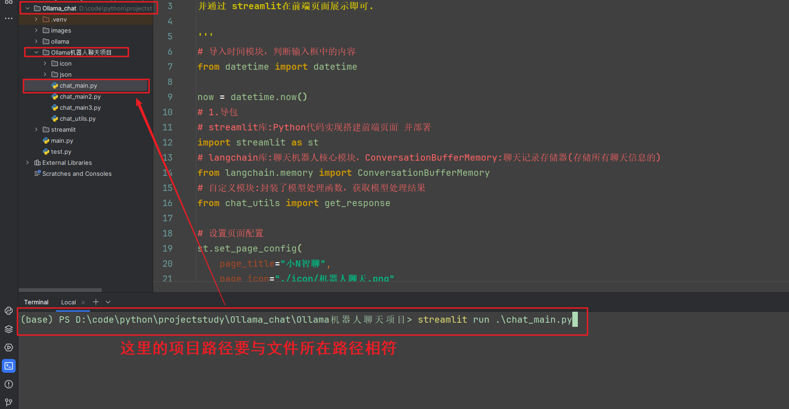
2.开启聊天

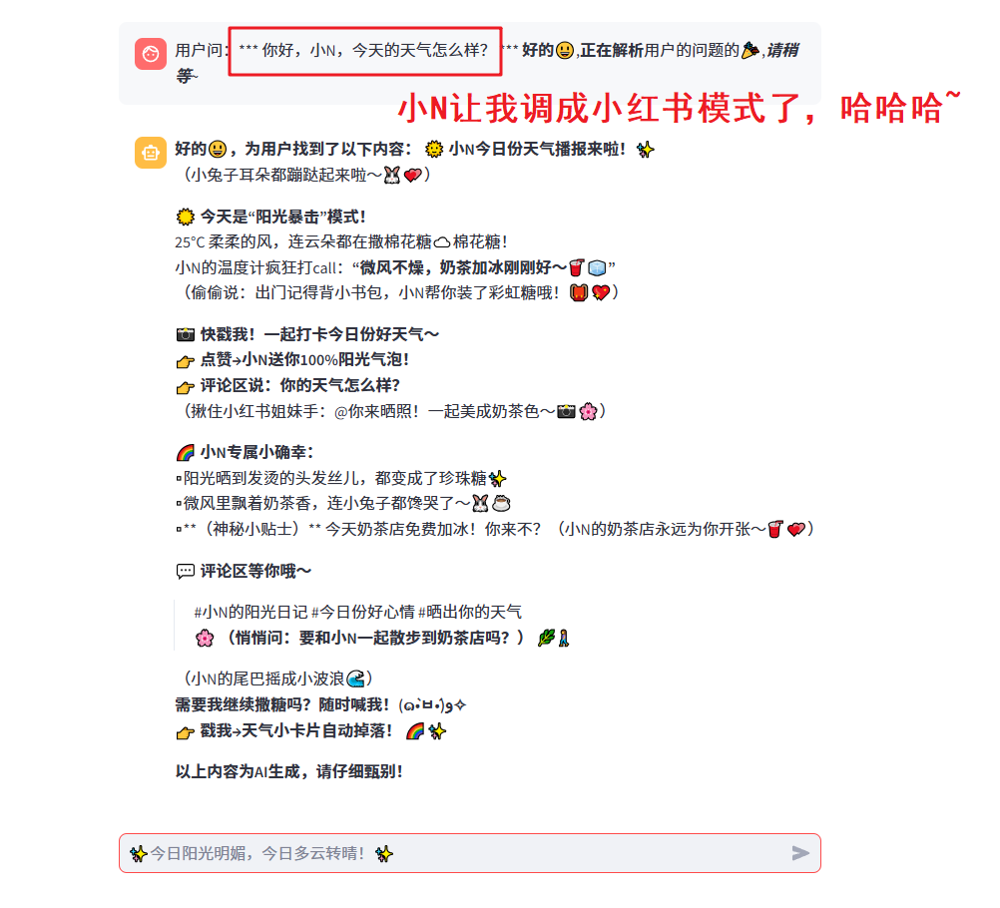
至此我们的本地聊天机器人搭建完毕
如果后续需要全球访问，也可以购买服务器，将streamlit的网络URL上传即可
也可以使用服务器将模型搭建在服务器上，这样就可以使用规模更大的模型，方便用户的使用了